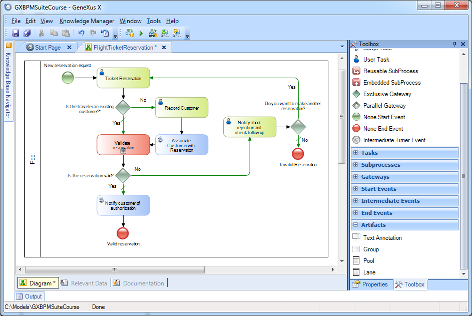
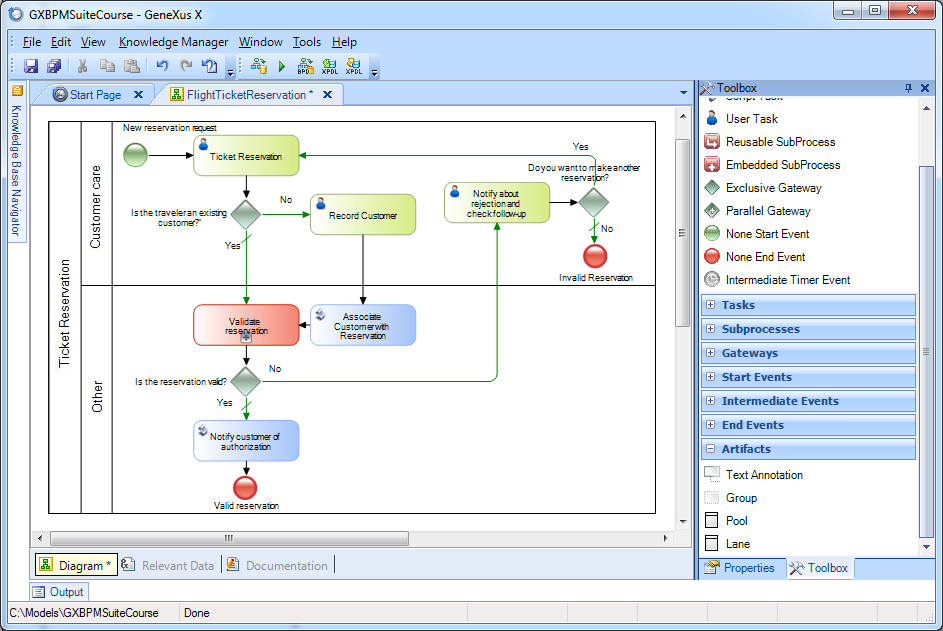
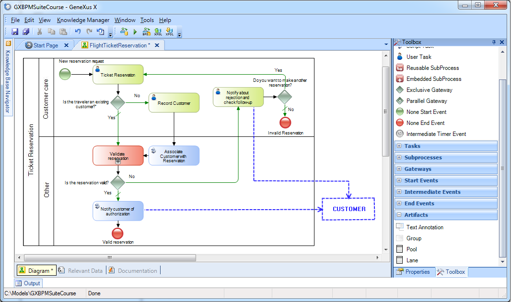

The BPMN standard provides mechanisms to document the information in a diagram, like the tasks related to each other, if they belong to the same participant or business entity, or if they are associated with a specific function or role in the company. This is done using Pools and Lanes, which are part of Swimlanes PoolsIn the Travel Agency example, the only business entity involved is the Travel Agency, which has a single process that we called Ticket Reservation. To indicate this, a Pool symbol is used; in our example it covers the entire diagram.  If the diagram had another business entity with its own process, we would group the tasks of this process in another pool.
LanesAnother thing we could do to add better documentation to our diagram is to group tasks associated with a specific role or function in the company. In our example, we want to make a group with all the tasks related to customer care and another group with all the other tasks. To indicate this, the Lane symbols are used. A pool can include one or more lanes. 
External entitiesIt's worth pointing out that even though several process tasks interact with the customer, it isn’t part of the process; it is an external entity. This can be modeled using dotted lines to show interaction between the process and the customer. 
|
| Backlinks |
| Hide value property |